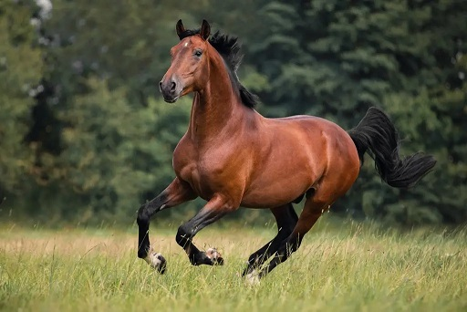

|
Jednym z moich zainteresowań jest jazda konna. Wszystko zaczęło się lata temu na wsi u dziadków. Mój pradziadek posiadał wiele zwierząt w tym konia. Od tamtego czasu zaczęłam interesować się tymi zwierzętami. Miałam jeden cel - zacząć jeździć. Moi rodzice oczywiście o tym wiedzieli, ale na początku nie dało się tego zrealizować. W Warszawie zaś z moją babcią nie raz chodziłam do cyrku. Było to dawno, więc zwierzęta były bardzo powrzechne w tego typu miejscach. Tam raz po raz wsiadałam na kucyka i jechałam kółko czy dwa. Dla małego dziecka było to coś niesamowitego. Pewnego razu na wakacjach w Busku-Zdroju kobieta będąca właścicielką pensjonatu, w którym się zatrzymywaliśmy, powiedziała, że razem ze swoimi córkami jeździ do pobliskiej stajni. W tamtym momencie zdecydowaliśmy by się z nimi zabrać i zapisać na jazdę. Była to moja pierwsza prawdziwa lekcja jazdy konnej. Byłam zachwycona. Niestety było to dwa dni przed naszym powrotem, więc szczęście nie trwało długo. W kolejnych latach zawsze zapisywaliśmy się na jazdy będąc w tamtym miejscu. Jeździłam wtedy bardzo nieregularnie i nie miałam dobrych nauczycieli przez co nie robiłam postępów. 
Nadszedł 2020 r. a z nim globalna pandemia . Nikt nigdzie nie wyjeżdżał, dlatego nie miałam jazd. W tamtym momencie byłam załamana, ale w kolejnym roku wszystko miało się zmienić. 2021 r. i lato. Znajomy mojego taty powiedział, że znalazł stajnie. Bach jedziemy. Od tamtego momentu zaczęłam jeździć regularnie (czasami z przerwami). Instruktorzy mi się zmieniali, a wiedza poszerzała. Mimo zwlotów i upadków dotarłam do tego momentu. Miałam wiele problemów, takich jak zagalopowania, przejścia między chodami, siodłanie konia czy brak odwagi do niektórych ćwiczeń, na przykład wysokich skoków z galopu. Bywały momenty zwątpienia, ale szłam dalej. Dzisiaj, po długich nieregularnych jazdach oraz po 2 latach regularności mogę stwierdzić jedno - umiem bardzo mało. Do mistrzów i ekspertów bardzo mi daleko. Dlatego ciągle się doskonale i starm rozwijać. Nie zawsze wychodzi, ale jakoś "idzie". Pragnę wznieść się na wiele wyższyh poziomów umiejętności jak i wiedzy. Przede mną długa droga, pełna problemów, tródności i zawachań, wiem jednak, że tego chcę. Moja stajnia
Mam nadzieję, że się uda. |